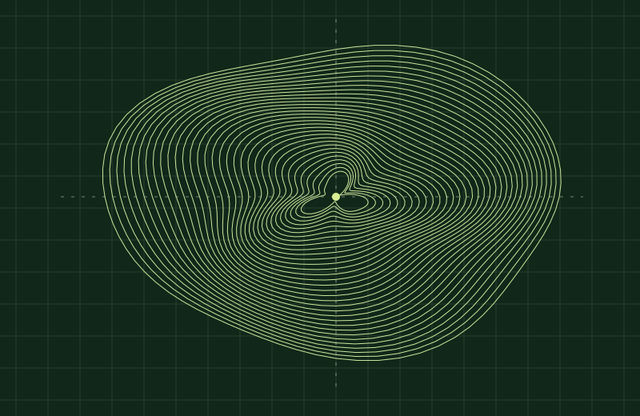
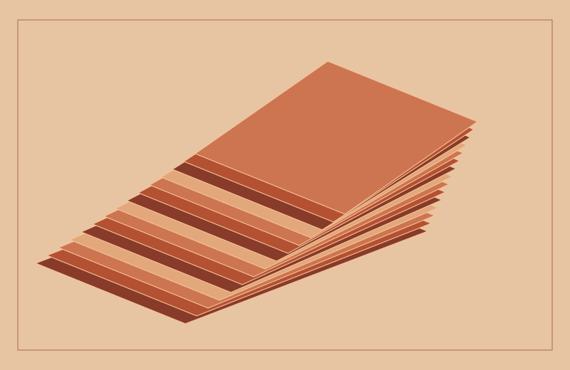
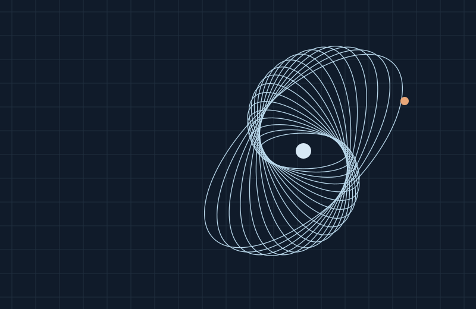
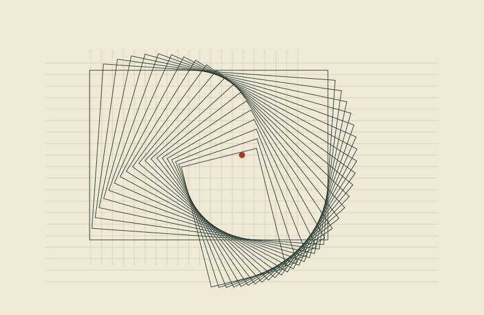

FIELDWORK / STUDY 01
A visual language for products that make complex systems easier to navigate.

SCROLL STUDY / 03
Browse original artwork by dragging the track or using the controls.



FIELD NOTES / 01
An editorial newsletter pattern for release notes, design decisions, and lessons from real products.